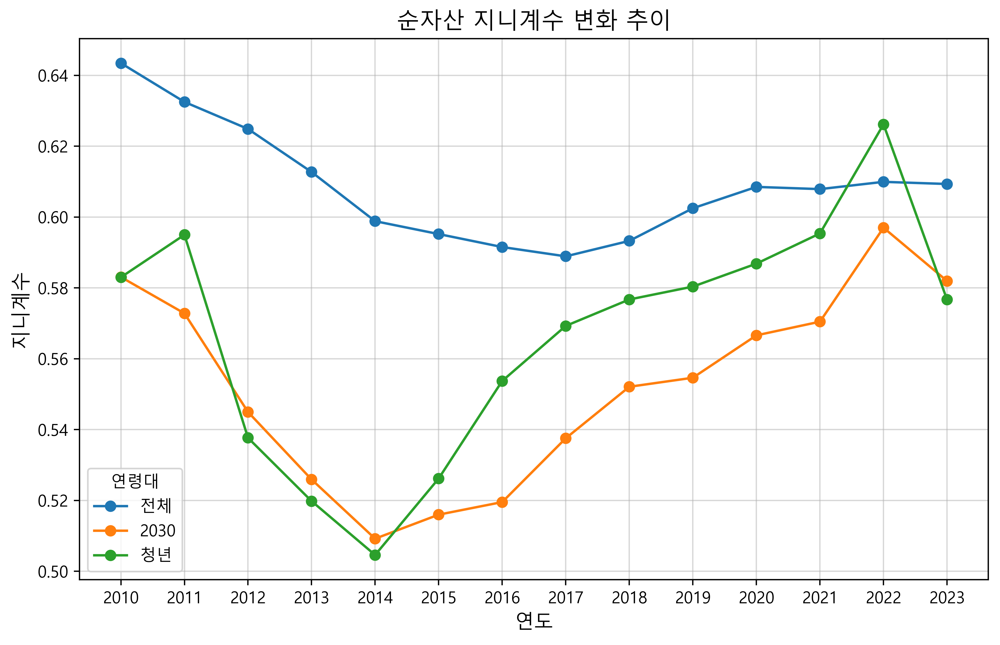
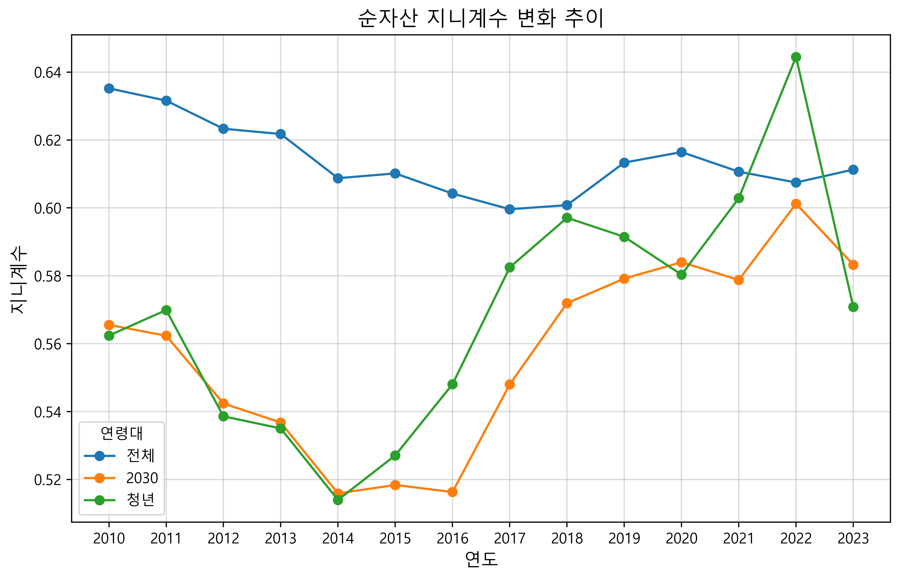
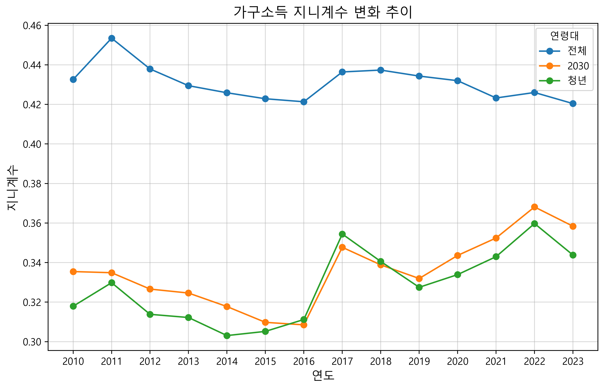
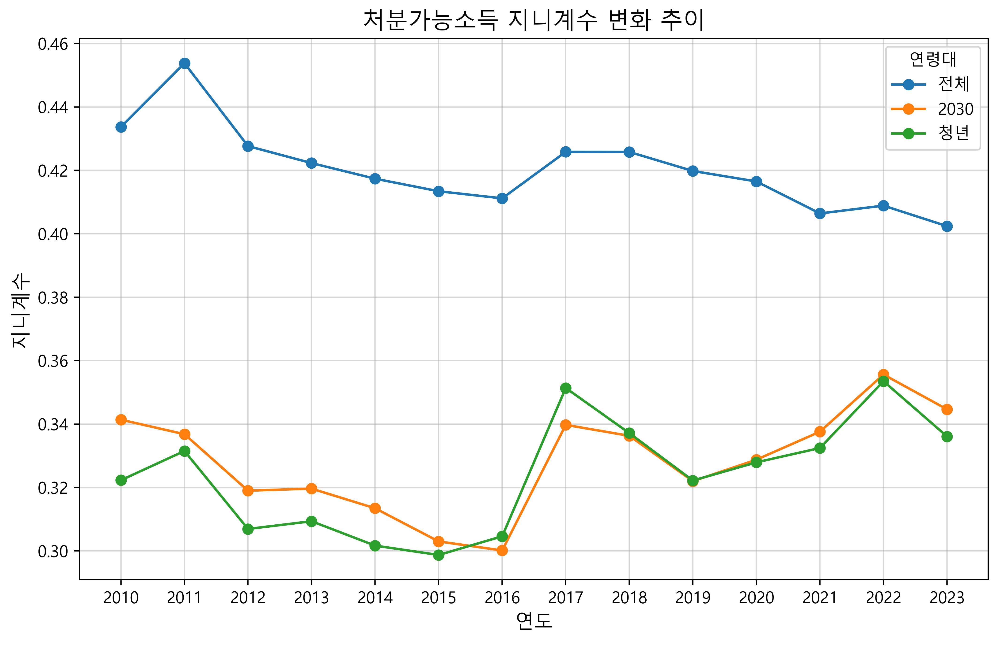

3.2 청년세대 지니계수 추이#
1 필요 함수#
%matplotlib inline
import numpy as np
import pandas as pd
import scipy.optimize as opt
import scipy.stats as st
import matplotlib.pyplot as plt
import numpy as np
from scipy.stats import moment
def weighted_mean(x, weights):
return np.sum(x * weights) / np.sum(weights)
def weighted_moment(data, weights, order):
mean = weighted_mean(data, weights)
return np.sum(weights * (data - mean) ** order) / np.sum(weights)
def weighted_std(data, weights):
mean = weighted_mean(data, weights)
variance = np.sum(weights * ((data - mean) ** 2)) / np.sum(weights)
return np.sqrt(variance)
def weighted_skewness(data, weights):
m2 = weighted_moment(data, weights, 2)
m3 = weighted_moment(data, weights, 3)
skewness = (np.sqrt(np.sum(weights)) * m3) / (m2 ** 1.5)
return skewness
def weighted_kurtosis(data, weights):
m2 = weighted_moment(data, weights, 2)
m4 = weighted_moment(data, weights, 4)
kurtosis = (np.sum(weights) * m4) / (m2 ** 2)
return kurtosis
import numpy as np
def weighted_gini(x, w):
# 데이터를 값 순서대로 정렬
sorted_data = np.asarray([x, w]).T[np.argsort(x)] # x 기준 오름차순으로 정렬
sorted_x, sorted_w = sorted_data[:, 0], sorted_data[:, 1]
# 총 가중치 및 누적 가중치 초기화
total_weight = np.sum(sorted_w)
sorted_w = sorted_w/total_weight
cumulative_weight = np.cumsum(sorted_w)
# 지니 계수 계산 항목
sorted_x_dev = sorted_x - weighted_mean(sorted_x, sorted_w)
f_hat = cumulative_weight.copy()
# f_hat 업데이트
for i in range(len(f_hat)):
if i == 0:
f_hat[i] = sorted_w[i] / 2
else:
f_hat[i] = cumulative_weight[i-1] + (sorted_w[i] / 2)
f_hat_dev = f_hat - f_hat.mean()
G = sorted_w*sorted_x_dev*f_hat_dev/(weighted_mean(sorted_x, sorted_w))
weighted_gini = 2*G.sum()
return weighted_gini
2 데이터#
한국: 가계금융복지조사(Survey of Household Finances and Living Conditions)
%matplotlib inline
import numpy as np
import pandas as pd
import scipy.optimize as opt
import scipy.stats as st
import matplotlib.pyplot as plt
데이터 다운로딩#
원시(raw) 데이터는 MDIS(MicroData Integrated Service)에서 “소득·소비·자산 > 가계금융조사”를 선택해 필요한 연도의 조사 자료를 다운로드 받는다.
다음 명령문은 다운로드 받은 2010년부터 2023년까지의 CSV 파일을 불러들이는 작업이다.
# 파일 경로와 이름의 패턴 설정
file_pattern = "../Data/SHF/{year}.csv"
# 데이터를 저장할 변수 초기화
dfs = []
# 2010부터 2023까지의 파일 로드
for year in range(2010, 2024):
file_name = file_pattern.format(year=year)
df_name = "df_{year}".format(year=year)
df = pd.read_csv(file_name, encoding='EUC-KR')
dfs.append((df_name, df))
# 결과를 변수에 저장
for df_name, df in dfs:
globals()[df_name] = df
df_2023
| 조사연도 | MD제공용_가구고유번호 | 가중값 | 수도권여부 | 가구주_성별코드 | 가구원수 | 노인가구여부 | 조손가구여부 | 한부모가구여부 | 다문화가구여부(2012년~) | ... | 원리금상환_가계지출감소항목코드 | 부채상환가능시기코드 | 가구주_은퇴여부 | 가구주_미은퇴_은퇴연령 | 가구주_미은퇴_최소생활비 | 가구주_미은퇴_적정생활비 | 가구주_미은퇴_노후준비상황코드 | 가구주_은퇴_은퇴연령 | 가구주_은퇴_적정생활비충당여부 | 가구주은퇴_생활비재원마련코드(2014년~) | |
|---|---|---|---|---|---|---|---|---|---|---|---|---|---|---|---|---|---|---|---|---|---|
| 0 | 2023 | 10000162 | 1077.906572 | G1 | 2 | 1 | G1 | G2 | G2 | G2 | ... | NaN | NaN | 1 | 77.0 | 100 | 200 | 5.0 | NaN | NaN | NaN |
| 1 | 2023 | 10000182 | 1086.438541 | G1 | 1 | 2 | G2 | G2 | G2 | G2 | ... | NaN | NaN | 1 | 70.0 | 200 | 200 | 3.0 | NaN | NaN | NaN |
| 2 | 2023 | 10000192 | 3626.894382 | G1 | 2 | 1 | G2 | G2 | G2 | G2 | ... | NaN | NaN | 1 | 70.0 | 300 | 400 | 5.0 | NaN | NaN | NaN |
| 3 | 2023 | 10000212 | 758.167174 | G2 | 2 | 1 | G1 | G2 | G2 | G2 | ... | NaN | NaN | 1 | 75.0 | 150 | 200 | 3.0 | NaN | NaN | NaN |
| 4 | 2023 | 10000222 | 1404.353475 | G2 | 1 | 1 | G2 | G2 | G2 | G2 | ... | NaN | 2.0 | 1 | 65.0 | 200 | 200 | 3.0 | NaN | NaN | NaN |
| ... | ... | ... | ... | ... | ... | ... | ... | ... | ... | ... | ... | ... | ... | ... | ... | ... | ... | ... | ... | ... | ... |
| 18089 | 2023 | 991300362 | 545.333267 | G2 | 1 | 3 | G2 | G2 | G2 | G2 | ... | NaN | NaN | 1 | 65.0 | 100 | 150 | 5.0 | NaN | NaN | NaN |
| 18090 | 2023 | 991900211 | 465.444170 | G2 | 1 | 4 | G2 | G2 | G2 | G2 | ... | NaN | NaN | 1 | 65.0 | 200 | 300 | 3.0 | NaN | NaN | NaN |
| 18091 | 2023 | 991900221 | 648.366811 | G2 | 1 | 3 | G2 | G2 | G2 | G2 | ... | 1.0 | 1.0 | 1 | 60.0 | 300 | 500 | 3.0 | NaN | NaN | NaN |
| 18092 | 2023 | 991900301 | 628.892098 | G2 | 1 | 4 | G2 | G2 | G2 | G2 | ... | NaN | NaN | 1 | 62.0 | 300 | 600 | 2.0 | NaN | NaN | NaN |
| 18093 | 2023 | 991900321 | 624.620427 | G2 | 1 | 2 | G1 | G2 | G2 | G2 | ... | NaN | NaN | 1 | 72.0 | 100 | 200 | 3.0 | NaN | NaN | NaN |
18094 rows × 160 columns
3 순자산#
import pandas as pd
# 연도 지정
years = ['2010', '2011', '2012', '2013', '2014', '2015', '2016',
'2017', '2018', '2019', '2020', '2021', '2022', '2023']
# 결과를 저장할 딕셔너리 초기화
networth_dict = {}
age_dict = {}
weight_dict = {}
# 각 연도별로 파일 읽기 및 데이터 추출
for year in years:
# 해당 연도에 대한 df 지정
data = globals()[f'df_{year}']
# 순자산, 가구주_만연령, 가중값 추출 및 저장
networth_dict[f'networth_{year}'] = data['순자산'] / 100 # 백만 원
age_dict[f'age_{year}'] = data['가구주_만연령']
weight_dict[f'weight_{year}'] = data['가중값']
# 연령대 정의
age_ranges = {'전체': (0, 200), '2030': (0, 39), '청년': (0, 34)}
# df_stats_age 초기화 (패널 데이터 형식)
index = pd.MultiIndex.from_product([years, age_ranges.keys()],
names=['year', 'age_range'])
df_stats_age = pd.DataFrame(index=index, columns=['mean', 'std', 'gini'])
# 각 연도 및 연령대별로 계산
for year in years:
x1 = networth_dict[f'networth_{year}']
x2 = age_dict[f'age_{year}']
weight = weight_dict[f'weight_{year}']
w = weight / weight.sum()
for age_range, (age_min, age_max) in age_ranges.items():
mask = (x2 >= age_min) & (x2 <= age_max)
x1_filtered = x1[mask]
w_filtered = w[mask]
mean = weighted_mean(x1_filtered, w_filtered)
std = weighted_std(x1_filtered, w_filtered)
gini = weighted_gini(x1_filtered, w_filtered)
df_stats_age.loc[(year, age_range), 'mean'] = mean
df_stats_age.loc[(year, age_range), 'std'] = std
df_stats_age.loc[(year, age_range), 'gini'] = gini
print("연도/연령대별 순자산 통계량")
print(df_stats_age)
연도/연령대별 순자산 통계량
mean std gini
year age_range
2010 전체 230.657574 477.260124 0.643432
2030 138.121877 208.577683 0.58305
청년 102.62714 155.319866 0.582989
2011 전체 245.600517 486.435337 0.63248
2030 142.660868 208.387948 0.572788
청년 107.025943 175.02523 0.594976
2012 전체 268.747221 496.917984 0.624853
2030 165.703763 214.453961 0.544956
청년 126.53076 157.024707 0.537656
2013 전체 268.305843 485.620848 0.612701
2030 160.954082 200.140663 0.525907
청년 121.322938 134.031385 0.519798
2014 전체 274.88073 473.921152 0.598822
2030 166.795092 185.30722 0.509188
청년 126.564644 135.800865 0.504588
2015 전체 284.291525 472.253402 0.595184
2030 177.571498 228.411257 0.515971
청년 137.939052 227.898565 0.526167
2016 전체 299.183042 490.441642 0.591519
2030 184.845832 237.811964 0.519521
청년 146.122867 254.057072 0.553714
2017 전체 315.721515 486.815129 0.588894
2030 198.270406 241.329378 0.537534
청년 142.102422 180.443938 0.569255
2018 전체 343.676078 529.456916 0.593258
2030 211.440052 275.11472 0.552074
청년 142.561012 191.325022 0.576715
2019 전체 352.805964 547.947409 0.602468
2030 215.237951 266.444296 0.554623
청년 142.215704 178.386264 0.580352
2020 전체 362.865907 579.779177 0.608496
2030 227.327335 300.550625 0.56659
청년 145.174249 190.26865 0.586831
2021 전체 414.520142 640.722869 0.607872
2030 256.385985 335.652197 0.570448
청년 157.034003 272.30611 0.59536
2022 전체 456.023278 695.765996 0.609923
2030 261.398821 370.420657 0.59698
청년 168.632989 324.965866 0.626157
2023 전체 435.403837 726.336736 0.609317
2030 236.778655 310.421897 0.581932
청년 150.637432 202.106894 0.576667
# gini 값만 추출하여 재구조화
df_gini_age = df_stats_age['gini'].unstack(level='age_range')
df_gini_age = df_gini_age[['전체', '2030', '청년']]
print("연도/연령대별 순자산 지니계수")
print(df_gini_age)
연도/연령대별 순자산 지니계수
age_range 전체 2030 청년
year
2010 0.643432 0.58305 0.582989
2011 0.63248 0.572788 0.594976
2012 0.624853 0.544956 0.537656
2013 0.612701 0.525907 0.519798
2014 0.598822 0.509188 0.504588
2015 0.595184 0.515971 0.526167
2016 0.591519 0.519521 0.553714
2017 0.588894 0.537534 0.569255
2018 0.593258 0.552074 0.576715
2019 0.602468 0.554623 0.580352
2020 0.608496 0.56659 0.586831
2021 0.607872 0.570448 0.59536
2022 0.609923 0.59698 0.626157
2023 0.609317 0.581932 0.576667
그래프 한글 표시
그래프에서 한글이 깨지는 것을 막기 위해서는 아래 명령문을 실행해야 한다.
import matplotlib
from matplotlib import font_manager, rc
font_path = "/Windows/Fonts/malgun.ttf"
font = font_manager.FontProperties(fname=font_path).get_name()
rc('font', family=font)
matplotlib.rcParams['axes.unicode_minus'] = False # 축에 마이너스 부호 제대로 나오게 하기
위 코드는 Windows에 해당하는 것이고, MacBook의 경우에는 위 명령문 세 번째 줄을 다음과 같이 바꿔야 한다.
font_path = "/System/Library/Fonts/AppleSDGothicNeo.ttc"
import matplotlib.pyplot as plt
# 그래프 크기 설정
plt.figure(figsize=(10, 6), dpi=500)
# 각 연령대의 gini 값 변화 추이 그리기
for column in ['전체', '2030', '청년']:
plt.plot(df_gini_age.index, df_gini_age[column], marker='o', label=column)
# 그래프 제목 및 축 레이블 설정
plt.title('순자산 지니계수 변화 추이', fontsize=14)
plt.xlabel('연도', fontsize=12)
plt.ylabel('지니계수', fontsize=12)
# 범례 추가
plt.legend(title='연령대', fontsize=10)
# 격자 추가
plt.grid(alpha=0.5)
# 그래프 표시
plt.show()

수도권#
import pandas as pd
# 연도 지정
years = ['2010', '2011', '2012', '2013', '2014', '2015', '2016',
'2017', '2018', '2019', '2020', '2021', '2022', '2023']
# 결과를 저장할 딕셔너리 초기화
networth_dict = {}
age_dict = {}
metro_dict = {}
weight_dict = {}
# 각 연도별로 파일 읽기 및 데이터 추출
for year in years:
# 해당 연도에 대한 df 지정
data = globals()[f'df_{year}']
# '수도권여부' 필터링
data = data[data['수도권여부'] == 'G1']
# 순자산, 가구주_만연령, 가중값 추출 및 저장
networth_dict[f'networth_{year}'] = data['순자산'] / 100 # 백만 원
age_dict[f'age_{year}'] = data['가구주_만연령']
weight_dict[f'weight_{year}'] = data['가중값']
# 연령대 정의
age_ranges = {'전체': (0, 200), '2030': (0, 39), '청년': (0, 34)}
# df_stats_age 초기화 (패널 데이터 형식)
index = pd.MultiIndex.from_product([years, age_ranges.keys()],
names=['year', 'age_range'])
df_stats_age = pd.DataFrame(index=index, columns=['mean', 'std', 'gini'])
# 각 연도 및 연령대별로 계산
for year in years:
x1 = networth_dict[f'networth_{year}']
x2 = age_dict[f'age_{year}']
weight = weight_dict[f'weight_{year}']
w = weight / weight.sum()
for age_range, (age_min, age_max) in age_ranges.items():
mask = (x2 >= age_min) & (x2 <= age_max)
x1_filtered = x1[mask]
w_filtered = w[mask]
mean = weighted_mean(x1_filtered, w_filtered)
std = weighted_std(x1_filtered, w_filtered)
gini = weighted_gini(x1_filtered, w_filtered)
df_stats_age.loc[(year, age_range), 'mean'] = mean
df_stats_age.loc[(year, age_range), 'std'] = std
df_stats_age.loc[(year, age_range), 'gini'] = gini
print("연도/연령대별 순자산 통계량")
print(df_stats_age)
연도/연령대별 순자산 통계량
mean std gini
year age_range
2010 전체 302.711086 623.746913 0.635216
2030 169.498123 239.511169 0.565546
청년 126.48754 165.543701 0.562404
2011 전체 307.084771 624.337234 0.63159
2030 174.635315 249.621029 0.562346
청년 131.30121 203.694577 0.569911
2012 전체 334.322052 611.643399 0.62332
2030 185.674597 224.378269 0.542399
청년 140.851637 167.888606 0.538609
2013 전체 321.896565 604.297946 0.621768
2030 174.789673 222.811246 0.536793
청년 127.804228 149.104467 0.535054
2014 전체 325.277248 587.625473 0.608757
2030 179.708904 195.399058 0.515909
청년 133.016036 150.954824 0.513993
2015 전체 331.10556 578.593131 0.610158
2030 179.032455 193.735321 0.518392
청년 138.708812 162.804498 0.527098
2016 전체 343.306479 594.091351 0.60423
2030 189.256697 197.278042 0.516311
청년 152.973674 175.515612 0.548064
2017 전체 367.373722 589.868679 0.599612
2030 215.238503 273.411189 0.548012
청년 156.943994 206.109228 0.582481
2018 전체 408.43652 632.021393 0.600812
2030 230.424248 316.976504 0.57194
청년 156.199467 221.959335 0.597093
2019 전체 426.94489 662.356585 0.613348
2030 235.540532 309.297468 0.579182
청년 151.713107 196.503069 0.591485
2020 전체 447.596783 706.084963 0.61644
2030 249.787149 352.404543 0.584007
청년 155.797239 202.6043 0.58034
2021 전체 519.921083 784.445043 0.610671
2030 284.780392 388.53258 0.578773
청년 172.137818 326.285019 0.602863
2022 전체 575.978111 843.811725 0.607483
2030 306.264558 431.723664 0.601217
청년 187.165181 386.616812 0.644482
2023 전체 541.537581 899.06528 0.611289
2030 273.964143 351.886662 0.583279
청년 162.029394 200.574087 0.57084
# gini 값만 추출하여 재구조화
df_gini_age = df_stats_age['gini'].unstack(level='age_range')
df_gini_age = df_gini_age[['전체', '2030', '청년']]
print("연도/연령대별 순자산 지니계수")
print(df_gini_age)
연도/연령대별 순자산 지니계수
age_range 전체 2030 청년
year
2010 0.635216 0.565546 0.562404
2011 0.63159 0.562346 0.569911
2012 0.62332 0.542399 0.538609
2013 0.621768 0.536793 0.535054
2014 0.608757 0.515909 0.513993
2015 0.610158 0.518392 0.527098
2016 0.60423 0.516311 0.548064
2017 0.599612 0.548012 0.582481
2018 0.600812 0.57194 0.597093
2019 0.613348 0.579182 0.591485
2020 0.61644 0.584007 0.58034
2021 0.610671 0.578773 0.602863
2022 0.607483 0.601217 0.644482
2023 0.611289 0.583279 0.57084
import matplotlib.pyplot as plt
# 그래프 크기 설정
plt.figure(figsize=(10, 6), dpi=500)
# 각 연령대의 gini 값 변화 추이 그리기
for column in ['전체', '2030', '청년']:
plt.plot(df_gini_age.index, df_gini_age[column], marker='o', label=column)
# 그래프 제목 및 축 레이블 설정
plt.title('순자산 지니계수 변화 추이', fontsize=14)
plt.xlabel('연도', fontsize=12)
plt.ylabel('지니계수', fontsize=12)
# 범례 추가
plt.legend(title='연령대', fontsize=10)
# 격자 추가
plt.grid(alpha=0.5)
# 그래프 표시
plt.show()

해석#
2030세대, 특히 청년층의 순자산 지니계수가 2015년부터 가파르게 높아진 데는 주택가격(특히 수도권) 급등과 부의 대물림이 크게 늘어난 것이 크게 작용한 것으로 판단된다.

데이터 출처: 국토연구원 부동산시장정책연구센터
4 가구소득#
import pandas as pd
# 연도 지정
years = ['2010', '2011', '2012', '2013', '2014', '2015', '2016',
'2017', '2018', '2019', '2020', '2021', '2022', '2023']
# 결과를 저장할 딕셔너리 초기화
income_dict = {}
age_dict = {}
weight_dict = {}
# 각 연도별로 파일 읽기 및 데이터 추출
for year in years:
# 해당 연도에 대한 df 지정
data = globals()[f'df_{year}']
# 가구주_만연령, 가중값 추출 및 저장
age_dict[f'age_{year}'] = data['가구주_만연령']
weight_dict[f'weight_{year}'] = data['가중값']
# 연도별로 다른 소득 컬럼 처리
if year in ['2010', '2011']:
income_column = '조사_경상소득'
elif year in ['2012', '2013', '2014', '2015', '2016']:
income_column = '경상소득(조사)'
else: # 2017년부터 2023년까지
income_column = '경상소득(보완)'
# 통계당국 처분가능소득 계산
x = data[income_column]
income_dict[f'income_{year}'] = x / 100 # 백만 원
# 연령대 정의
age_ranges = {'전체': (0, 200), '2030': (0, 39), '청년': (0, 34)}
# df_stats_age 초기화 (패널 데이터 형식)
index = pd.MultiIndex.from_product([years, age_ranges.keys()],
names=['year', 'age_range'])
df_stats_age = pd.DataFrame(index=index, columns=['mean', 'std', 'gini'])
# 각 연도 및 연령대별로 계산
for year in years:
x1 = income_dict[f'income_{year}']
x2 = age_dict[f'age_{year}']
weight = weight_dict[f'weight_{year}']
w = weight / weight.sum()
for age_range, (age_min, age_max) in age_ranges.items():
mask = (x2 >= age_min) & (x2 <= age_max)
x1_filtered = x1[mask]
w_filtered = w[mask]
mean = weighted_mean(x1_filtered, w_filtered)
std = weighted_std(x1_filtered, w_filtered)
gini = weighted_gini(x1_filtered, w_filtered)
df_stats_age.loc[(year, age_range), 'mean'] = mean
df_stats_age.loc[(year, age_range), 'std'] = std
df_stats_age.loc[(year, age_range), 'gini'] = gini
print("연도/연령대별 소득 통계량")
print(df_stats_age)
연도/연령대별 소득 통계량
mean std gini
year age_range
2010 전체 37.729263 35.666476 0.432597
2030 38.748152 31.054725 0.335447
청년 33.823743 21.832978 0.317909
2011 전체 40.11769 45.266612 0.453477
2030 40.258164 31.42681 0.334864
청년 36.697 25.597783 0.329819
2012 전체 42.334004 45.183263 0.43791
2030 43.149169 29.554049 0.326589
청년 38.521289 23.552304 0.313823
2013 전체 44.785288 45.515289 0.429451
2030 45.246769 30.844498 0.324586
청년 39.745768 24.391265 0.312205
2014 전체 46.58477 44.492048 0.425873
2030 47.861919 33.497429 0.317754
청년 42.29219 31.345191 0.303075
2015 전체 47.695587 42.590169 0.422841
2030 48.702121 30.331436 0.309765
청년 43.780218 25.842378 0.305185
2016 전체 48.818554 43.37079 0.421318
2030 49.202369 29.502706 0.308492
청년 44.642892 26.539838 0.3112
2017 전체 54.781907 54.264717 0.436399
2030 51.657465 38.100676 0.347723
청년 44.827007 29.941723 0.354427
2018 전체 57.053089 55.860219 0.437351
2030 54.43666 36.573052 0.33884
청년 45.204069 29.550577 0.34056
2019 전체 58.275563 55.936299 0.434313
2030 56.698264 37.845988 0.331942
청년 47.545561 30.458446 0.327485
2020 전체 59.238988 59.992862 0.431978
2030 59.345736 43.274996 0.3436
청년 46.892239 30.149034 0.333909
2021 전체 61.247556 61.172116 0.423237
2030 61.770919 48.555697 0.352425
청년 48.915104 33.47371 0.342976
2022 전체 64.13669 58.946581 0.426013
2030 63.984752 52.695201 0.368121
청년 51.690021 42.591105 0.359731
2023 전체 67.624613 63.089049 0.420402
2030 65.89594 50.712008 0.358372
청년 52.76189 34.822484 0.343803
# gini 값만 추출하여 재구조화
df_gini_age = df_stats_age['gini'].unstack(level='age_range')
df_gini_age = df_gini_age[['전체', '2030', '청년']]
print("연도/연령대별 소득 지니계수")
print(df_gini_age)
연도/연령대별 소득 지니계수
age_range 전체 2030 청년
year
2010 0.432597 0.335447 0.317909
2011 0.453477 0.334864 0.329819
2012 0.43791 0.326589 0.313823
2013 0.429451 0.324586 0.312205
2014 0.425873 0.317754 0.303075
2015 0.422841 0.309765 0.305185
2016 0.421318 0.308492 0.3112
2017 0.436399 0.347723 0.354427
2018 0.437351 0.33884 0.34056
2019 0.434313 0.331942 0.327485
2020 0.431978 0.3436 0.333909
2021 0.423237 0.352425 0.342976
2022 0.426013 0.368121 0.359731
2023 0.420402 0.358372 0.343803
import matplotlib.pyplot as plt
# 그래프 크기 설정
plt.figure(figsize=(10, 6), dpi=500)
# 각 연령대의 gini 값 변화 추이 그리기
for column in ['전체', '2030', '청년']:
plt.plot(df_gini_age.index, df_gini_age[column], marker='o', label=column)
# 그래프 제목 및 축 레이블 설정
plt.title('가구소득 지니계수 변화 추이', fontsize=14)
plt.xlabel('연도', fontsize=12)
plt.ylabel('지니계수', fontsize=12)
# 범례 추가
plt.legend(title='연령대', fontsize=10)
# 격자 추가
plt.grid(alpha=0.5)
# 그래프 표시
plt.show()

5 처분가능소득#
import pandas as pd
# 연도 지정
years = ['2010', '2011', '2012', '2013', '2014', '2015', '2016',
'2017', '2018', '2019', '2020', '2021', '2022', '2023']
# 결과를 저장할 딕셔너리 초기화
income_dict = {}
age_dict = {}
weight_dict = {}
# 각 연도별로 파일 읽기 및 데이터 추출
for year in years:
# 해당 연도에 대한 df 지정
data = globals()[f'df_{year}']
# 가구주_만연령, 가중값 추출 및 저장
age_dict[f'age_{year}'] = data['가구주_만연령']
weight_dict[f'weight_{year}'] = data['가중값']
# 해당 연도의 '처분가능소득' 변수명 설정
if year in ['2010', '2011']:
income_column = '조사_처분가능소득'
elif year in ['2012', '2013', '2014', '2015', '2016']:
income_column = '처분가능소득(조사)[경상소득-비소비지출]'
else:
income_column = '처분가능소득(보완)[경상소득(보완)-비소비지출(보완)]'
# 해당 연도의 '연간지급이자' 변수명 설정
if year in ['2010', '2011']:
interest_payment = '조사_지출_비소비지출_연간지급이자'
elif year in ['2012']:
interest_payment = '지출_비소비지출_연간지급이자(조사)'
elif year in ['2013', '2014', '2015']:
interest_payment = '조사_지출_비소비지출_연간지급이자'
else:
interest_payment = '지출_비소비지출_연간지급이자(조사)'
# 통계당국 처분가능소득 계산
x = data[income_column] + data[interest_payment]
income_dict[f'income_{year}'] = x / 100 # 백만 원
# 연령대 정의
age_ranges = {'전체': (0, 200), '2030': (0, 39), '청년': (0, 34)}
# df_stats_age 초기화 (패널 데이터 형식)
index = pd.MultiIndex.from_product([years, age_ranges.keys()],
names=['year', 'age_range'])
df_stats_age = pd.DataFrame(index=index, columns=['mean', 'std', 'gini'])
# 각 연도 및 연령대별로 계산
for year in years:
x1 = income_dict[f'income_{year}']
x2 = age_dict[f'age_{year}']
weight = weight_dict[f'weight_{year}']
w = weight / weight.sum()
for age_range, (age_min, age_max) in age_ranges.items():
mask = (x2 >= age_min) & (x2 <= age_max)
x1_filtered = x1[mask]
w_filtered = w[mask]
mean = weighted_mean(x1_filtered, w_filtered)
std = weighted_std(x1_filtered, w_filtered)
gini = weighted_gini(x1_filtered, w_filtered)
df_stats_age.loc[(year, age_range), 'mean'] = mean
df_stats_age.loc[(year, age_range), 'std'] = std
df_stats_age.loc[(year, age_range), 'gini'] = gini
print("연도/연령대별 소득 통계량")
print(df_stats_age)
연도/연령대별 소득 통계량
mean std gini
year age_range
2010 전체 32.351046 31.178492 0.433686
2030 32.968694 27.657438 0.341384
청년 28.775827 18.696268 0.322295
2011 전체 34.858431 41.116273 0.453805
2030 34.957992 28.417748 0.336809
청년 32.010601 22.716567 0.33152
2012 전체 36.570673 38.753776 0.42765
2030 37.135557 25.170997 0.318999
청년 33.322171 19.93728 0.30693
2013 전체 38.427659 39.5943 0.422294
2030 38.815289 26.470464 0.319648
청년 34.350716 20.941127 0.309366
2014 전체 40.02168 38.35484 0.417371
2030 41.054485 29.236157 0.31345
청년 36.60937 28.548871 0.301676
2015 전체 40.986633 35.718795 0.413415
2030 41.634252 24.853045 0.302998
청년 37.719369 21.504912 0.298726
2016 전체 41.983472 36.744472 0.411177
2030 42.171836 24.286241 0.300147
청년 38.610192 22.479859 0.304615
2017 전체 46.904027 43.394543 0.425839
2030 44.038063 29.394178 0.339751
청년 38.77395 25.48497 0.35138
2018 전체 48.501717 43.881816 0.425811
2030 46.357005 30.60579 0.336298
청년 39.305376 25.378285 0.337152
2019 전체 49.230483 42.768963 0.419805
2030 48.290059 30.091037 0.321993
청년 41.082432 25.427022 0.322197
2020 전체 50.136732 47.118105 0.416496
2030 50.287355 33.048243 0.328773
청년 40.500074 25.104888 0.327935
2021 전체 51.95646 48.058334 0.406417
2030 52.307391 37.742333 0.337595
청년 42.535239 28.00784 0.332454
2022 전체 54.377382 45.831307 0.408877
2030 54.255222 42.889034 0.35563
청년 44.657717 37.829198 0.353511
2023 전체 57.288753 47.872197 0.402404
2030 55.773823 40.456813 0.344645
청년 45.529597 29.488613 0.336099
# gini 값만 추출하여 재구조화
df_gini_age = df_stats_age['gini'].unstack(level='age_range')
df_gini_age = df_gini_age[['전체', '2030', '청년']]
print("연도/연령대별 소득 지니계수")
print(df_gini_age)
연도/연령대별 소득 지니계수
age_range 전체 2030 청년
year
2010 0.433686 0.341384 0.322295
2011 0.453805 0.336809 0.33152
2012 0.42765 0.318999 0.30693
2013 0.422294 0.319648 0.309366
2014 0.417371 0.31345 0.301676
2015 0.413415 0.302998 0.298726
2016 0.411177 0.300147 0.304615
2017 0.425839 0.339751 0.35138
2018 0.425811 0.336298 0.337152
2019 0.419805 0.321993 0.322197
2020 0.416496 0.328773 0.327935
2021 0.406417 0.337595 0.332454
2022 0.408877 0.35563 0.353511
2023 0.402404 0.344645 0.336099
import matplotlib.pyplot as plt
# 그래프 크기 설정
plt.figure(figsize=(10, 6), dpi=500)
# 각 연령대의 gini 값 변화 추이 그리기
for column in ['전체', '2030', '청년']:
plt.plot(df_gini_age.index, df_gini_age[column], marker='o', label=column)
# 그래프 제목 및 축 레이블 설정
plt.title('처분가능소득 지니계수 변화 추이', fontsize=14)
plt.xlabel('연도', fontsize=12)
plt.ylabel('지니계수', fontsize=12)
# 범례 추가
plt.legend(title='연령대', fontsize=10)
# 격자 추가
plt.grid(alpha=0.5)
# 그래프 표시
plt.show()
